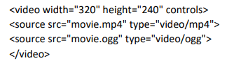

HTML позволява да вградите музикален фон в страницата си, както и да сложите връзки към ваши музикални и видео клипове, които потребителя да чуе и види чрез щракане върху съответните връзки. Повечето версии операционни системи и браузъри имат вградени програми за възпроизвеждане на аудио и видео файлове.
Тагът, който се използва за вмъкване на аудио и звуци е <AUDIO>. Чрез него се стартира музикален плеър. За визуализиране контролите на плеъра се използва атрибута CONTROLS. С атрибута SRC се указва пътя до музикалния файл, а с TYPE се задава неговия формат Например: <source src="music.mp3" type="audio/mpeg">.
<embed> , <iframe> и <video> са елементи за визуализация на мултимедия. С тяхна помощ можете да добавите на страницата освен музика и видео.
Формати на файлове за звук и видео
Дали един файл съдържа звукови или видео материали може да се разбере по файловия формат, т.е. по разширението на съответния файл.
- Основните формати за звукови файлове са midi, mp3 и wav. Следователно ако видите файл с някое от тези разширения, например music.midi, song.mp3, sound.wav и пр., може да сте сигурни, че това е звуков файл
- Основните формати за видео файлове са avi, mpg и qt. Ако видите файл с такова разширение, например video.avi, clip.mpg и пр., това означава, че те съдържат някакъв филм/клип.
Вграждане на видео
Става много лесно чрез използването на тага video. Към него се добавят атрибутите за местоположение на файла, размери и контроли
